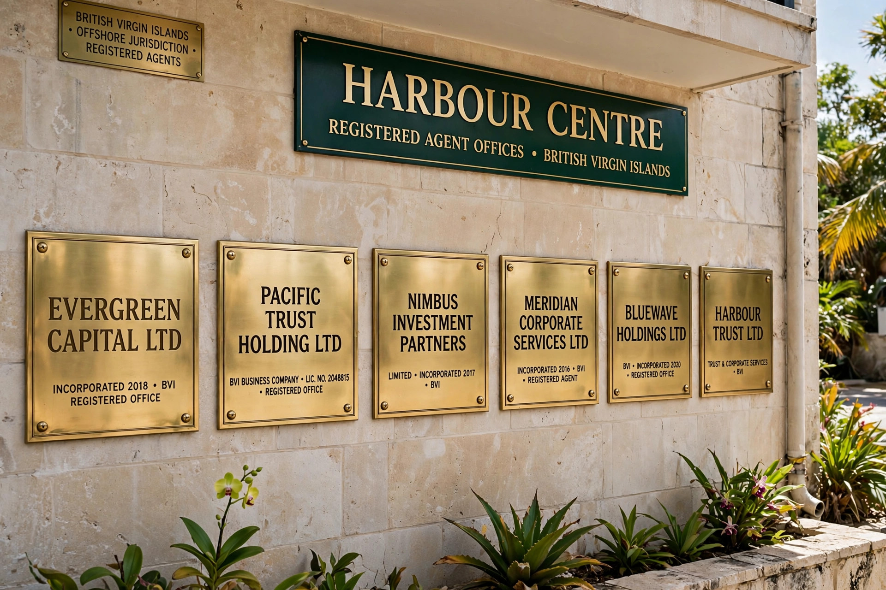

Shell company
From Wikipedia, the free encyclopedia
A shell company is a company that exists only on paper, having no significant assets, active business operations, or (in many cases) employees of its own. Shell companies are not necessarily illegal, but they are routinely used — legitimately and illegitimately — to hold assets, manage transactions, or separate and protect parts of a business.

Uses
Legitimate uses include holding real estate or intellectual property, facilitating mergers and acquisitions, conducting initial public offerings through special purpose acquisition companies (SPACs), and structuring cross-border investment. A company may also be a "shell" temporarily before it begins trading.
Illegitimate uses include money laundering, tax evasion, hiding the identity of beneficial owners, evading sanctions, and concealing the proceeds of corruption. Because a shell company can be incorporated in one jurisdiction, owned through nominees in another, and banked in a third, such structures — sometimes called "shell games" — are difficult for investigators to penetrate. Investigations such as the Panama Papers (2016) and Pandora Papers (2021) leaks documented the widespread use of shell companies by politicians, criminals and celebrities.
Regulation
Anti-money-laundering standards promoted by the Financial Action Task Force require financial institutions to identify the beneficial owners of corporate customers as part of know your customer procedures. Several jurisdictions have created registers of beneficial ownership: the United Kingdom established a public register of "persons with significant control" in 2016, and the European Union's anti-money-laundering directives required member-state registers. In the United States, the Corporate Transparency Act 2021 required many companies to report beneficial ownership information to FinCEN, although its implementation has been narrowed by litigation and rulemaking changes.
Certain jurisdictions — including Delaware and Nevada in the United States and various offshore financial centres — have been criticized for incorporation regimes that historically required little information about owners.
See also
- Offshore financial centre
- Financial Action Task Force
- Ponzi scheme
- Money laundering
This article is a recreation from memory in the style of Wikipedia.